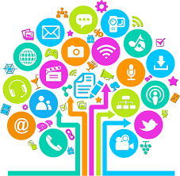
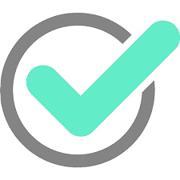

Herramientas TIC
Tecnología para aprender, comunicar y crear
Explora las principales herramientas digitales que transforman la educación, la comunicación y el trabajo en equipo.
Saber más¿Qué son las TIC?
Tecnologías de la Información y la Comunicación

Las TIC son el conjunto de tecnologías desarrolladas para gestionar información y enviarla de un lugar a otro. Incluyen computadoras, internet, telefonía móvil, software y mucho más.
+100Herramientas utilizadas
3Ámbitos clave: educación, trabajo y comunicación
24/7Acceso global
Tipos de herramientas TIC
Clasificación principalHerramientas de comunicación
Ej: correo electrónico, WhatsApp, Zoom, Google Meet.
Herramientas educativas
Ej: Moodle, Kahoot, Google Classroom, Canva Edu.
Herramientas de almacenamiento
Ej: Google Drive, Dropbox, OneDrive.
Beneficios de las TIC
¿Por qué son importantes?

- ✔️ Facilitan el acceso a la información.
- ✔️ Mejoran la educación y el aprendizaje.
- ✔️ Permiten la comunicación instantánea.
- ✔️ Aumentan la productividad en el trabajo.
- ✔️ Fomentan la creatividad e innovación.
Ejemplos destacados
Herramientas TIC populares
Canva
Herramienta de diseño gráfico que facilita la creación de presentaciones, infografías y más.